| 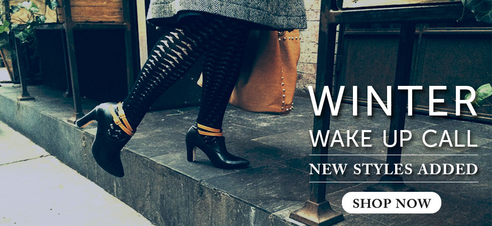 | Julie Bee'sPosition: Web & Graphic Designer Julie Bee's is an online shoe store that also hosted various offline events and marketing campaigns. My role was to design and develop the new online store on the Bigcommerce platform. I am now continuing to maintain the site, , while designing graphic materials for their offline activities. |
ZebrablindsPosition: Graphic & UX Designer Zebrablinds is an online window treatment store that allowed customers to customize their window treatment choices. I was hired to inject some UX design into their existing online store and to design the graphics for their promotional material. | 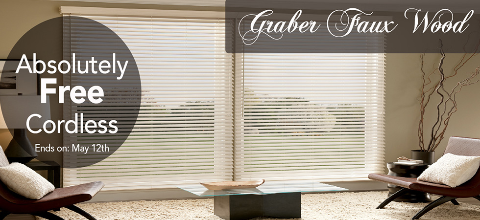 |
| 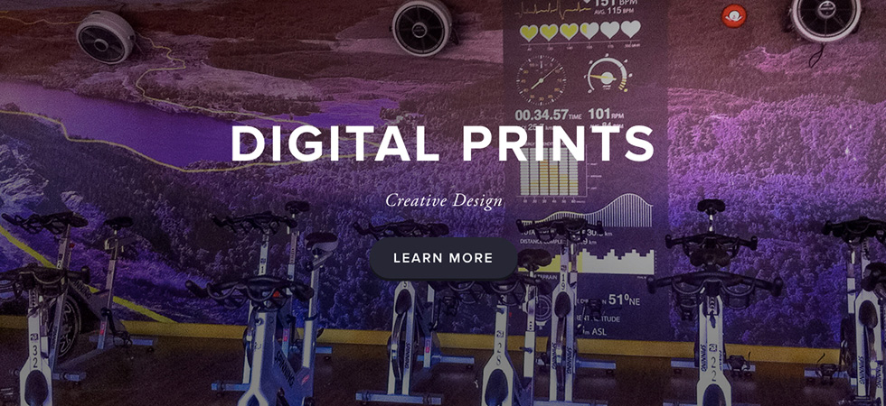 | JD GraphicsPosition: Administrative Assistant, JD Graphics is a print shop that designed, printed and installed large scale graphics for vehicles and buildings. I worked as an Administrative Assistant managing the print shop, as a Graphic Designer creating designs for clients, and as the resident Web Designer building and maintaining the shop website. |
Julie Bee'sBanners, Event Invites and Newsletters |
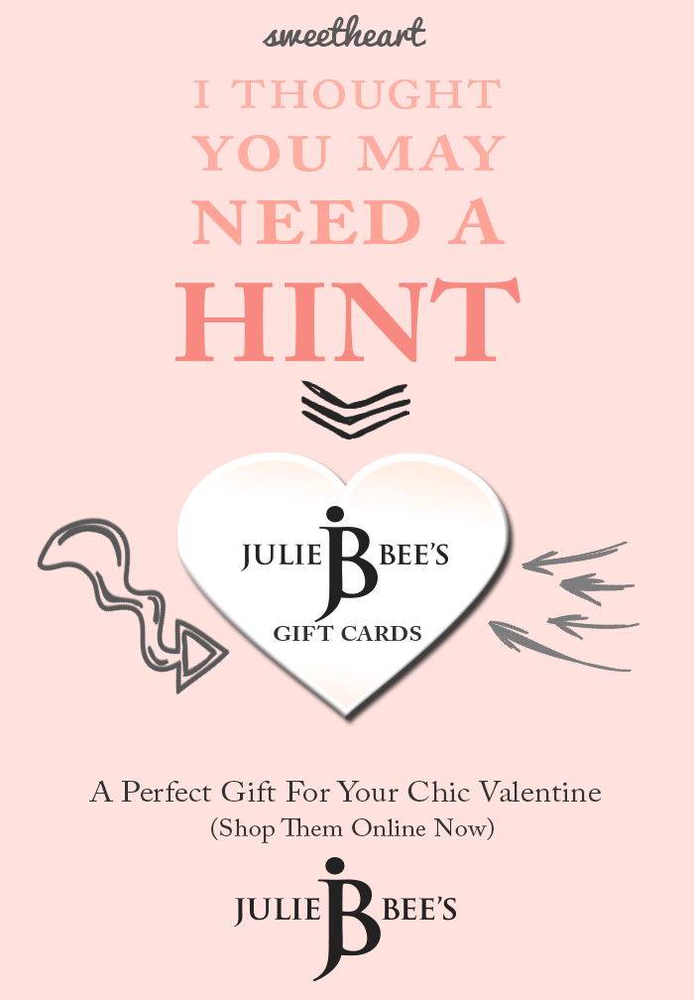  |
ZebrablindsLogo, Banners and Flyers |
| 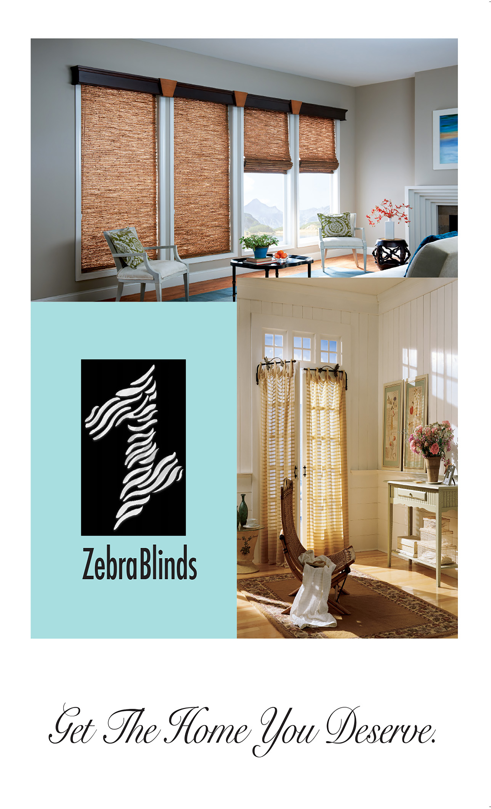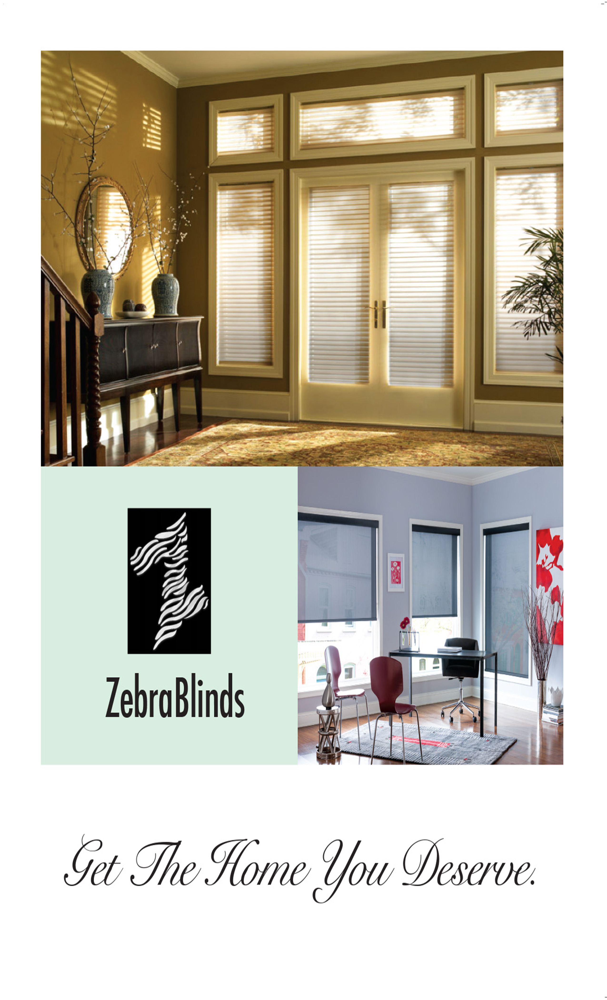 |
| 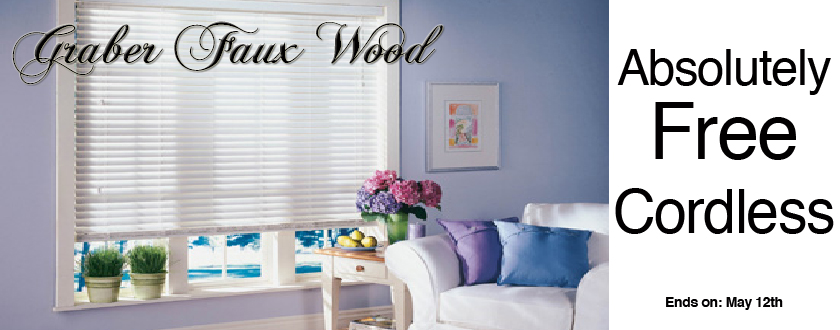 |
Julie Bee'sBefore & After Photo Edits |
 |
| 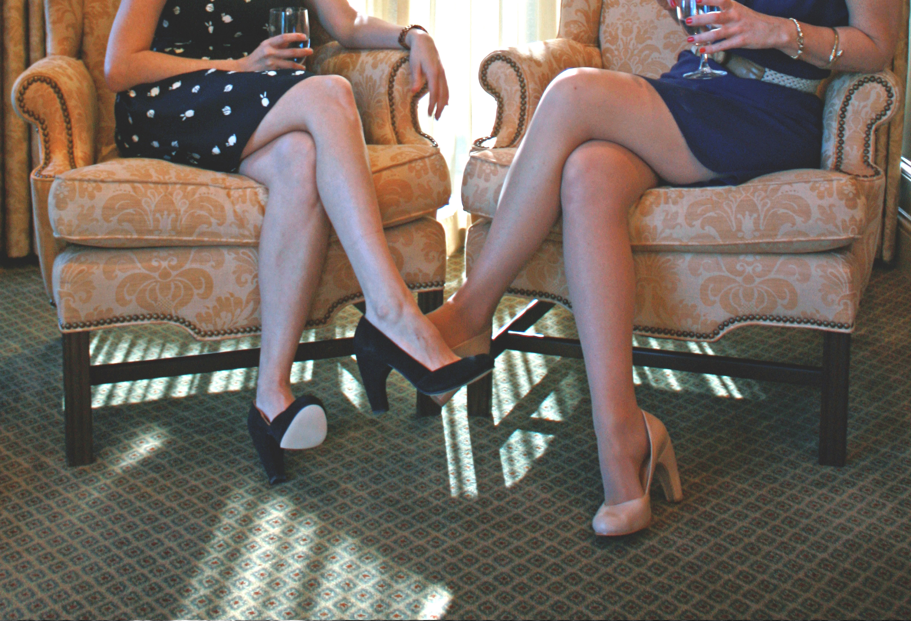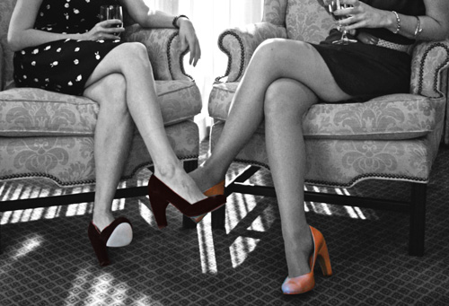 |
JD GraphicsBefore & After Photo Edits |
| 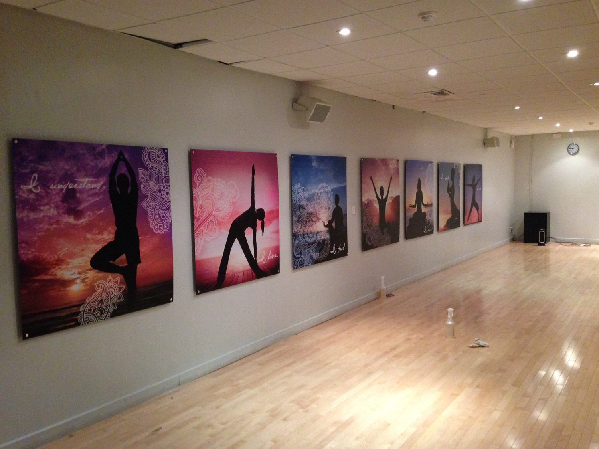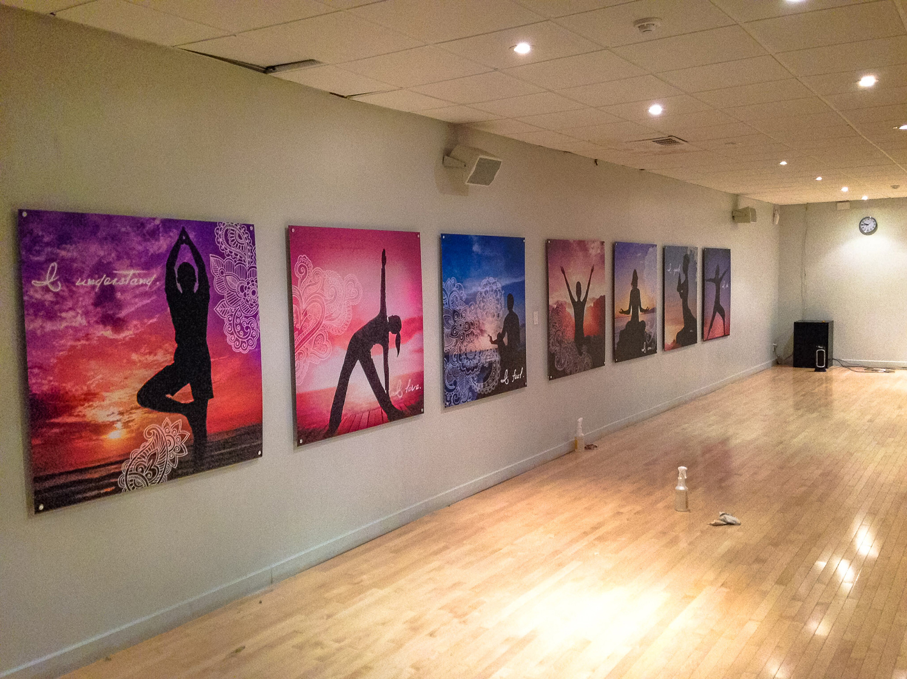 |
| 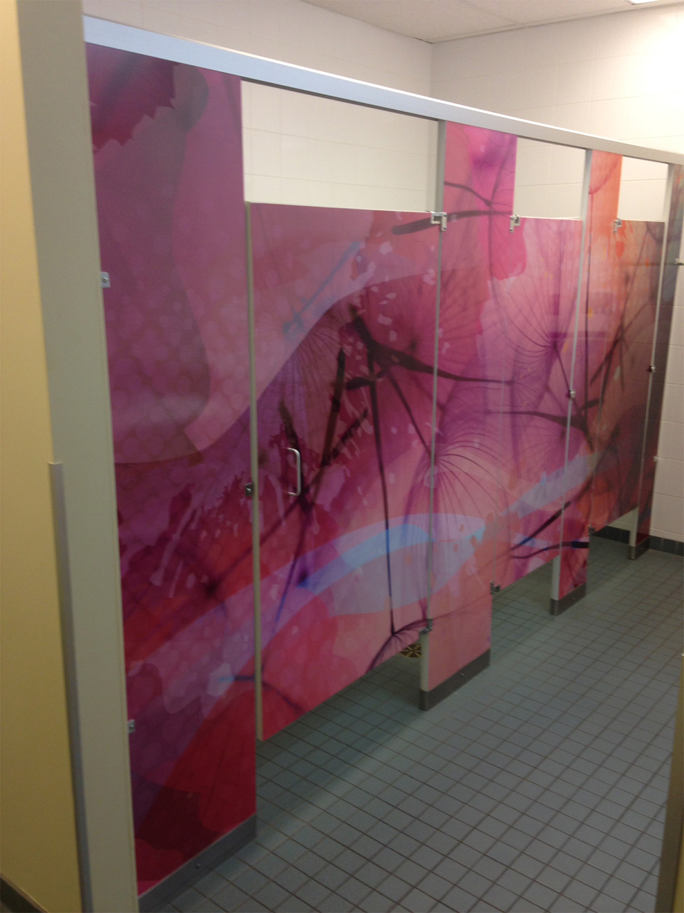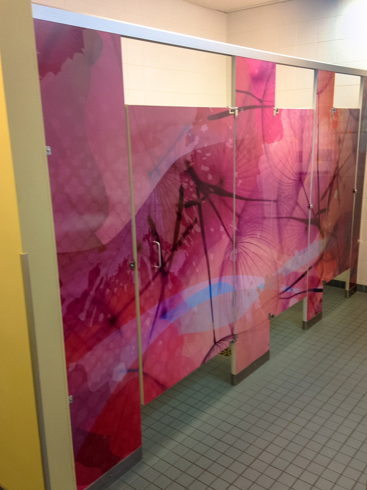 |